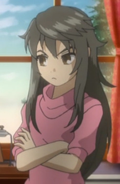

|
Alicia Rue |
- Sword Art Online
- Sword Art Online: Sword Art Offline
- Sword Art Online Movie: Ordinal Scale
|
Alicia Rue is the leader of the Cait Sith. She is trained with dark magic called Moonlight Mirror. |
 |
Chloe von Einzbern |
- Fate/kaleid liner Prisma Illya 2wei!
- Fate/kaleid liner Prisma Illya 2wei! OVA
- Fate/kaleid liner Prisma Illya 2wei Herz!
- Fate/kaleid liner Prisma Illya 2wei Herz! Specials
- Fate/kaleid liner Prisma Illya 3rei!!
- Fate/kaleid liner Prisma Illya 3rei!! Specials
|
Chloe von Einzbern or Kuro is a being created from Illya's hidden power and the Archer class card. She is a twin of Illya's original self. Kuro is calmer and more nonchalant than Illya. She is devious and manipulative. |
 |
Kim Diehl |
- Soul Eater
- Soul Eater NOT!
|
Kim Diehlis a lamp meister and partner to Jacqueline. She is obsessed with making money. Kim was part of the witch society but was kick out. |
|  |
Merielle |
|
Merielle is the daughter of Carr Benedict and Fiona. She is Treize's twin sister. Merielle has a pushy and headstrong personality. |
| |
Regan |
|
Regan is the grand daughter of Balthasar, the servant of the Farnese. She is bossy and has a talented for acting. |